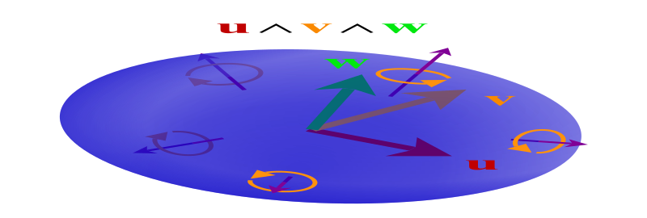
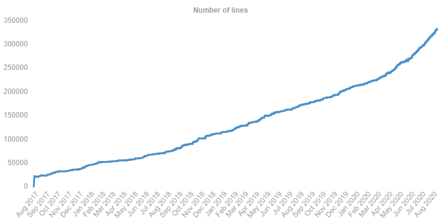

<!DOCTYPE html>
<html lang="en">
  <head>
    <meta charset="utf-8" />
    <meta name="viewport" content="width=device-width, initial-scale=1.0, maximum-scale=1.0, user-scalable=no" />

    <title>Formalizing Geometric Algebra in Lean</title>
    <link rel="stylesheet" href="./dist/reveal.css" />
    <link rel="stylesheet" href="./dist/theme/black.css" id="theme" />
    <link rel="stylesheet" href="./css/highlight/railscasts.css" />
    <link rel="stylesheet" href="./css/common.css" />

  </head>
  <body>
    <div class="reveal">
      <div class="slides"><section  data-markdown><script type="text/template"><!-- .slide: style="font-size: 100%" -->

### Formalizing Geometric Algebra

## in Lean

Eric Wieser<sup style="opacity: 0.5">1</sup>, Utensil Song<sup style="opacity: 0.5">2</sup>

<div style="">
  
</div>

<div style="font-size: 40%; line-height: 1.5em; opacity: 0.5; text-align: left; display: table; margin: auto">
1. Cambridge University Engineering Department<br />
2. Independent
</div>

<aside class="notes"><p>Hi, I&#39;m Eric Wieser, a PhD student at Cambridge University</p>
<p>Today&#39;s talk is about formalizing Geometric algebra (or GA) into the language of a theorem prover such as Lean, an ongoing project between myself and Utensil Song.</p>
<p>We&#39;ll talk about the value a theorem prover in GA could provide, and the tools we&#39;ve chosen to formalize it in.</p>
<p>We&#39;ll then give a brief tutorial to demonstrate what using a theorem prover is like.</p>
<p>Finally, we&#39;ll review and compare existing formalization approaches</p>
<p>Overall, we believe that the experience of formalizing geometric significant mathematics into the rigorous language of a theorem prover
will provide us with productive tools to apply GA both effectively and correctly.</p>
</aside></script></section><section ><section data-markdown><script type="text/template">
<!-- .slide: style="font-size: 80%" id="uses-theorem-prover" -->

### What do I need a Theorem Prover for?


<blockquote style="margin-bottom: 160px; margin-top: 60px">

I now <strong>clearly understand</strong> that [theorem proving software] is part of the <strong>inevitable future</strong> of mathematics.

<p class="reference">
<cite><a href="https://www.youtube.com/watch?v=Dp-mQ3HxgDE">The Future of Mathematics?</a></cite>
<span>Prof. Kevin Buzzard<br /><small>Pure Mathematics, Imperial College London</small></span>
</p>
</blockquote>


* Checking correctness and rigor of proofs in software <!-- .element: class="fragment"-->
* Interactive assistance in constructing such proofs <!-- .element: class="fragment"-->
* Leveraging semantically-searchable archives of proofs <!-- .element: class="fragment"-->

<aside class="notes"><p>Since I was unfamiliar with theorem provers until I started this project, I&#39;ll
give a quick summary of what they are, and why they are useful.</p>
<p>Their most obvious use is for rigorously stating and proving mathematics in a machine-readable way, such that the proof can be fully verified.</p>
<p>To make this more accessible, they typically include a proof assistant, a tool
to guide the user as they are writing their proof, often via automation.</p>
<p>Perhaps the most valuable aspect of a theorem prover is that any statement proved with it is put in machine-searchable database, where it can be easily found and reused in constructing further proofs.</p>
<p>For these reasons and others, there are many who consider theorem provers to be the future of mathematics.</p>
</aside></script></section><section data-markdown><script type="text/template">
<!-- .slide: style="font-size: 80%;" id="uses-ga" -->

### What can I use GA for?

<ul style="display: block">
  <li class="fragment">Theory
    <ul style="columns: 2; column-gap: 40px; font-size: smaller">
      <li>Geometric Numbers <br /><small>($\mathbb{C}$ / $\mathbb{H}$ / $\mathbb{D}$  &hellip;)</small></li>
      <li>Linear Algebra <br /><small>(Matrices &hellip;)</small></li>
      <li>Geometry <br /><small>(Grassmann-Cayley/Projective/Conformal &hellip;)</small></li>
      <li>Analysis <br /><small>(Vector Calculus/Differential Forms &hellip;)</small></li>
    </ul>
  </li>
  <li class="fragment">Applications
    <ul style="columns: 2; column-gap: 40px; font-size: smaller">
      <li>Physics</li>
      <li>Computer graphics</li>
      <li>Robotics</li>
      <li>&hellip;</li>
    </ul>
  </li>
  <li class="fragment">Unifying the above with a geometrically intuitive model</li>
</ul>

<aside class="notes"><p>Obviously, if you&#39;re attending this conference you have plenty ideas of the areas in which geometric algebra
can be used:</p>
<ol>
<li>It subsumes many other types of frequently used tools - the complex numbers, the quaternions, etc.</li>
<li>It has applications in multiple fields of physics, computer graphics, and robotics.</li>
<li>And it does all this while enabling geometric intuition.</li>
</ol>
<!-- 
GA is originally reformulated from Clifford Algebra to make it algebraically simpler

it incorporates and relates existing frameworks

is applied to areas involving geometric representation and manipulation, particularly in physics, computer graphics, and robotics. It's mostly a rediscovery of the geometry interpretation of the algebraic language.

For the study of Geometry (and Physics, which is largely geometric in nature), geometric intuition (or physical insight) is arguably the most crucial element. Synthetic geometry followed this path.

Then came Analytic geometry which satisfied the need for numeric calculation. It also works for reasoning, enjoys the mechanical power of algebra, but at the expense of letting coordinates sneak into the process of reasoning, even for properties that hold without explicit coordinates. Geometric Algebra brought back the balance by manipulating geometric primitives (or physical objects) algebraically without appealing to the coordinates and quantities, and yet the resulting formulas are algebraic so the capability of numeric calculation is regained instantly by feeding values to formulas.

The end-to-end power from reasoning to calculation, the interplay between geometry and algebra is intrinsic to Geometric Algebra. Formalizing Geometric Algebra into the language of a theorem prover thus must preserve such power.
 --></aside></script></section><section data-markdown><script type="text/template">

<!-- .slide: style="font-size: 80%;" id="uses-combined" -->

### The value of formalization of GA

<div style="background: #232323; padding: 20px; zoom: 60%; margin: auto; display: table">
  <h4>What do I need a Theorem Prover for?</h4>
<ul style="margin-left: 0px">
<li>Checking correctness and rigor of proofs in software</li>
<li>Interactive assistance in constructing such proofs</li>
<li>Leveraging semantically-searchable archives of proofs</li>
</ul>
</div>

<span style="font-size: 200%; opacity: 0.5">&times;</span>

<div style="background: #232323; padding: 20px; zoom: 60%; margin: auto; display: table">
<h4>What can I use GA for?</h4>
<ul style="display: block">
  <li>Theory
    <ul style="columns: 2; column-gap: 40px; font-size: smaller">
      <li>Geometric Numbers <br /><small>($\mathbb{C}$ / $\mathbb{H}$ / $\mathbb{D}$  &hellip;)</small></li>
      <li>Linear Algebra <br /><small>(Matrices &hellip;)</small></li>
      <li>Geometry <br /><small>(Grassmann-Cayley/Projective/Conformal &hellip;)</small></li>
      <li>Analysis <br /><small>(Vector Calculus/Differential Forms &hellip;)</small></li>
    </ul>
  </li>
  <li>Applications
    <ul style="columns: 2; column-gap: 40px; font-size: smaller">
      <li>Physics</li>
      <li>Computer graphics</li>
      <li>Robotics</li>
      <li>&hellip;</li>
    </ul>
  </li>
  <li>Unifying the above with a geometrically intuitive model</li>
</ul>
</div>


<aside class="notes"><p>What&#39;s important here is that this covers a wide range of topics - so a formalization of GA
opens up the cartesian product of the topics in this slide and the topics in the previous slide.</p>
</aside></script></section><section data-markdown><script type="text/template">
<!-- .slide: style="font-size: 60%;" class="wish-list" id="wish-list-geometry" -->

### Wish list for doing geometry

<blockquote class="long">

A framework that:
- is *coordinate-free*
- <!-- .element: class="fragment fade-semi-out" data-fragment-index="0" -->
  has a *uniform representation* for points, lines, and planes
- <!-- .element: class="fragment fade-semi-out" data-fragment-index="0" -->
  can calculate *“parallel-safe” meet and join* of these geometric entities
- provides *readable compact expressions* for all classical euclidean formulas and constructions, including distances and angles, perpendiculars and parallels, orthogonal projections, and other metric operations,
- <!-- .element: class="fragment fade-semi-out"  data-fragment-index="0" -->
  has a *single, geometrically intuitive form* for euclidean motions, one with a single representation for operators and operands
- <!-- .element: class="fragment fade-semi-out" data-fragment-index="0" -->
  provides *automatic differentiation* of functions of one or several variables
- <!-- .element: class="fragment fade-semi-out" data-fragment-index="0" -->
  provides a compact, efficient *model for kinematics and rigid body mechanics*
- <!-- .element: class="fragment fade-semi-out" data-fragment-index="0" -->
  lends itself to *efficient, practical implementation*
- is *backwards-compatible* with existing representations including vector, quaternion, dual quaternion, and exterior algebras
<p class="reference">
<cite><a href="https://arxiv.org/abs/2002.04509">Course notes &mdash; Geometric Algebra for Computer Graphics<br/>SIGGRAPH 2019</a></cite>
<span>Charles G. Gunn</span>
</p>
</blockquote>

<aside class="notes"><p>Let&#39;s think for a moment about the properties we wish such a formalization to have.</p>
<p>In Charles Gunn&#39;s course notes for a SIGGRAPH 2019 talk, he presents a wishlist for doing geometry.</p>
<ol>
<li>We adopt the most important of these wishes - a coordinate-free representation, compact and readable expressions, and
compatibility with other simpler algebras.</li>
</ol>
</aside></script></section><section data-markdown><script type="text/template">
<!-- .slide: style="font-size: 60%;" class="wish-list" id="wish-list-prover" -->

### Wish list for doing Geometric Algebra in a theorem prover

<div style="text-align: left">

A framework that:
- is *coordinate-free*
- provides *compact expressions* for the algebraic formulas involving geometric representation and manipulation
- is *backwards-compatible* with any existing formalizations of vector spaces, complex numbers, quaternions, &hellip;


<div class="fragment">

- supports *arbitrary (including **degenerate**) metrics* $\mathcal{G}(p, q, r)$
- has *specializations for common algebras*, notably
  - Conformal Geometric Algebra, $\mathcal{G}(4, 1, 0)$
  - Projective Geometric Algebra, $\mathcal{G}(3, 0, 1)$
- reasons in a *geometrically intuitive way*

</div>

<div class="fragment">

- is *accessible* to different mental models of GA, both mathematicians and GA users in other fields
- is *compatible* with software implementations, which would allow formal verification in future
</div>

<div class="fragment">

- is *interoperable* with existing proofs
- can eventually formalize *Geometric Calculus*
</div>
</div>

<aside class="notes"><p>Taking these ideas from the previous slide, we add the desire that our framework</p>
<ol>
<li><p>Supports arbitrary metrics, to include users of common algebras like CGA and PGA;</p>
<ul>
<li>That it provides specialized reasoning tools for these algebras</li>
<li>which work in a geometrically intuitive way</li>
<li>remain compatible with existing formalizations</li>
</ul>
</li>
<li><p>We also want it to be accessible to mental models of GA, as well as compatible with
computational models used in existing software implementations.</p>
</li>
<li><p>Finally, we&#39;d like it to be interoperable with other formalized mathematics, as our stretch goal of formalizing
geometric calculus would be a great deal easier if we can start on a foundation of formalized calculus.</p>
</li>
</ol>
</aside></script></section><section data-markdown><script type="text/template">
<!-- .slide: style="font-size: 75%;" -->

### Vision

- Flexible abstraction levels  <!-- .element: class="fragment" -->
  - Foundation: mathematical soundness and generality
  - Interface: accessible to common GA practitioners
- End-to-end support for GA-based reasoning <!-- .element: class="fragment" -->
  - research  <!-- .element: class="fragment" -->
    - developing theory
    - modelling practical applications
  - software development  <!-- .element: class="fragment" -->
    - modelling data structures and algorithms
    - efficient code generation
  - education  <!-- .element: class="fragment" -->
    - gamify the experience of proving
- New insight for both  <!-- .element: class="fragment" -->
  - the formalization process
  - the math itself

<aside class="notes"><ol>
<li>Fitting multiple mental models means we need flexible abstraction levels.</li>
<li>We want to enable use of our tool in research, software development, and even as an introduction to GA.</li>
<li>We are hopeful that this process will provide us with new insights into both GA and formalization.</li>
</ol>
</aside></script></section></section><section ><section data-markdown><script type="text/template">
<!-- .slide: style="font-size: 80%;" -->

### What's Lean?

- A language for  <!-- .element: class="fragment" -->
  - Theorem proving
  - Functional programming
  - Meta-programming
- Platform for   <!-- .element: class="fragment" -->
  - Formalized Mathematics
  - Software verification
  - Domain specific languages
- Developed principally by Leonardo de Moura  <!-- .element: class="fragment" -->
  - at Microsoft Research since 2013
  - in C++ & Lean

<aside class="notes"><ul>
<li>Platform for   <!-- .element: class="fragment" --><ul>
<li>Modelling Mathematics, Software, domain-specific objects and rules</li>
<li>Verifying their correctness by formally stating and proving theorems</li>
<li>Developing proof-building tactics</li>
<li>Integrating with other tools</li>
</ul>
</li>
</ul>
<!-- - Aims to bridge the gap between
  - interactive theorem proving
  - automated theorem proving --></aside></script></section><section data-markdown><script type="text/template">
<!-- .slide: style="font-size: 70%;" -->

### A brief history of Lean

<div style="height:50px; position:relative; width: 90%; margin: auto; margin-bottom: 20px">
<canvas id="lean-timeline"></canvas>
</div>

<ul>
  <li class="fragment">Relatively new (compared to other actively used tools)
    <ul>
      <li style="font-size: smaller">Mizar (<span style="color: #42affa">1973</span>), Isabelle (<span style="color: #42affa">1986</span>), HOL Family (<span style="color: #42affa">1988</span>)</li>
      <li style="font-size: smaller">Coq (<span style="color: #42affa">1989</span>), Metamath (<span style="color: #42affa">1993</span>), Agda (<span style="color: #42affa">2007</span>)</li>
      <li style="font-size: smaller">Lean 1 (<span style="color: green">2013</span>) & Lean 2 (<span style="color: green">2015</span>)</li>
    </ul>
    <blockquote style="font-size: 60%; margin-bottom: 20px">
      Lean had the advantage of being born later and learning from past mistakes.
      <p class="reference">
        <cite>CICM 2020 slack</cite>
        <span>Mario Carneiro, Lean Maintainer</span>
      </p>
    </blockquote>
  </li>
  <li class="fragment">Lean 3 (<span style="color: green">2016</span>)
    <ul>
      <li style="font-size: smaller">Actively maintained by the community (v3.5.1 to v3.18.4 in 2020)</li>
      <li style="font-size: smaller">Can be used <a href="https://leanprover.github.io/live/latest/">in-browser</a> or in supported IDEs: <a href="https://github.com/leanprover/vscode-lean">VS Code</a> and <a href="https://github.com/leanprover/lean-mode">Emacs</a></li>
    </ul>
  </li>
  <li class="fragment">Lean 4<sup>🍀</sup> (<span style="color: yellow">202x</span>)
    <ul>
      <li style="font-size: smaller">Better support for domain-specific syntax and custom automation</li>
      <li style="font-size: smaller">Native code and its formal verification in one language</li>
      <li style="font-size: smaller">Performance boost for smart inferences</li>
    </ul>
  </li>
</ul>

<aside class="notes"><p>Lean&#39;s predecessors have been around for over 40 years longer than it - the field of theorem proving is hardly new.
However, lean&#39;s youth allows it to pick the strongest features while avoiding the weak points of past tools, and to evolve rapidly.</p>
<p>The current release of lean is version 3, with development transferring from Microsoft Research to its community.
Thanks to modern compiler tools, you can try it out in your browser today without installing anything.</p>
<p>Development at Microsoft continues with lean 4.
Notably for GA applications, this release will come with substantially better support for domain-specific notation.
Of great interest is the fact that the function programming part of lean will compile to machine code, making
the language a viable option for simultaneously writing and proving correctness of performant software.</p>
<!-- Z3: an efficient SMT(Satisfiability modulo theories) solver (2012)

[Z3 to Lean, Efficient Verification](https://leanprover.github.io/talks/from_z3_to_lean.pdf) --></aside></script></section><section data-markdown><script type="text/template">
<!-- .slide: style="font-size: 75%;" id="design-of-lean" -->

### The design of Lean

<div style="text-align: left">

<div class="fragment">

#### Prover architecture

- a library of <q>tactics</q> to generate complex implicit proofs
- an <q>elaborator</q> to make implicit proofs explicit ones
- a small, trusted <q>kernel</q> for verifying explicit proofs

</div>


<div class="fragment" style="margin-top: 40px">

#### Type foundation

* Dependent Type Theory: Coq, Agda, <span style="color: #569cd6; font-weight: bolder;">Lean</span><br/>
  <span style="opacity: 0.5; font-size: smaller">Set Theory: Mizar, Metamath</span><br/>
  <span style="opacity: 0.5; font-size: smaller">Simple Type Theory: Isabelle/HOL, HOL Family</span>

  Core idea: "Semi-soft" types based on "hard" types

</div>

</div>

<aside class="notes"><p>Lean&#39;s architecture breaks into three pieces - high-level tactics, for intuitive construction of proofs;
a medium-level elaborator, which fills out uninteresting gaps in these proofs to make them explicit;
and finally a trusted kernel to verify them.</p>
<p>The core idea here is that you only need to trust the kernel to know that you have constructed a correct proof,
while not being forced to write out trivial proofs in incredible precision and length.
The kernel itself can then be checked via other tools, or even by hand.</p>
<hr />

<p>Lean shares the same type-theoretic foundation as Coq and Adga, which is a stronger and more powerful setting,
but can mimic the look&amp;feel of the Set Theory that many are more familiar with.</p>
</aside></script></section><section data-markdown><script type="text/template">
<!-- .slide: style="font-size: 70%" id="design-of-lean2" -->

### The design of Lean

<div style="text-align: left">

#### Type foundation: Cornerstones 

- Calculus of Inductive Constructions (CIC) &mdash; Inductive types
- Proof irrelevance &mdash; method of proof doesn't matter
- Quotient types &mdash; subtyping
- Axiom of choice (optional) &mdash; classical logic

To learn more:

- *Comparison with Other Libraries* in [The Mathlib paper](https://arxiv.org/abs/1910.09336)
- [*The Type Theory of Lean* by Mario Carneiro](https://github.com/digama0/lean-type-theory/releases/tag/v1.0)
- [Type Theory for Lean perfectoid spaces project](https://leanprover-community.github.io/lean-perfectoid-spaces/type_theory.html)
- [A Survey of Languages for Formalizing Mathematics](https://arxiv.org/abs/2005.12876)
- [Lean versus Coq: The cultural chasm](https://artagnon.com/articles/leancoq)

</div>

<aside class="notes"><p>For completeness, here&#39;re some details of lean&#39;s type theory and some references, which I won&#39;t go into further.</p>
</aside></script></section><section data-markdown><script type="text/template">
<!-- .slide: style="font-size: 70%;" -->

### Mathlib

<ul>
  <li class="fragment">A Mathematical library for Lean</li>
  <li class="fragment">Comparable to
    <ul>
      <li>Coq's <q>mathematical components</q></li>
      <li>Isabelle's <q>HOL-Analysis</q></li>
    </ul>
  </li>
  <li class="fragment">
  Curated by a diverse set of almost 100 <a href="https://leanprover-community.github.io/meet.html#maintainers">maintainers</a> and <a href="https://github.com/math-comp/math-comp/graphs/contributors">contributors</a>:
  <ul style="font-size: 90%">
    <li>role: <span style="opacity: 0.75">Professors, Post-docs, PhD students, Undergrads</span></li>
    <li>origin: <span style="opacity: 0.75">USA, France, The Netherlands, UK, Canada, Australia</span></li>
    <li>expertise: <span style="opacity: 0.75">Mathematics, Computer Science, Physics, AI</span></li>
  </ul>
  </li>
  <li class="fragment">Containing <a href="https://leanprover-community.github.io/mathlib-overview.html">formalizations in</a>
    <ul style="columns: 2; font-size: 90%">
      <li>General algebra</li>
      <li>Linear algebra</li>
      <li>Topology</li>
      <li>Analysis</li>
      <li>Data structures</li>
      <li>Logic and computation</li>
    </ul>
  </li>
  <li class="fragment">No Clifford, Geometric, Grassmann, or Exterior Algebras (yet)</li>
</ul>

<aside class="notes"><p>Mathlib is Lean&#39;s mathematics library, in essence a collection of structures and
proven theorems and structures to reuse in your own formalizations.</p>
<p>Its goal is to be comparable to equivalent libraries in the Coq and Isabelle languages.</p>
<p>The library is maintained by a diverse and growing community, resulting in a diverse and growing
range of formalizations within it.</p>
<p>Sadly, this doesn&#39;t yet extend to the mathematics this conference is about.</p>
</aside></script></section><section data-markdown><script type="text/template">
### Mathlib

<div style="display: flex; justify-content: space-between">
<p style=" width: 33%; "><span style="display: block; opacity: 0.8; font-size: 75%">Definitions</span> 16265</p>
<p style=" width: 33%; "><span style="display: block; opacity: 0.8; font-size: 75%">Theorems</span> 33511</p>
<p style=" width: 33%; "><span style="display: block; opacity: 0.8; font-size: 75%">Meta declarations</span> 3812</p>
</div>



<a href="https://leanprover-community.github.io/mathlib_stats.html" style="font-size: 50%">https://leanprover-community.github.io/mathlib_stats.html</a>

<aside class="notes"><p>Just to give a feel for the breadth of mathlib, today it consists of over 30 thousand theorems.
You can see that in the last four months, the rate of of growth has only accelerated.</p>
</aside></script></section><section data-markdown><script type="text/template">
<!-- .slide: style="font-size: 48%"  -->

### The Lean Community

<!-- - Diverse backgrounds 
  - working mathematicians
  - pure math students
  - computer scientists
  - domain experts -->

<blockquote style="margin-bottom: 20px" >

  Lean is in an interesting position because it is getting a steady in-flow of classically trained mathematicians.
  So it is important that the tool addresses the problems that the (mathematician) users have.

  <p class="reference">
  <cite>CICM 2020 slack</cite>
  <span>Mario Carneiro, PhD in Logic, Lean Maintainer</span>
</p>
</blockquote>

<div style="display: table; text-align: left; margin: auto">
<div class="fragment">

Shared values
<ul style="font-size: 80%">
  <li>Generality</li>
  <li>Interconnectivity and coherency of components</li>
  <li>Maintainability</li>
  <li>Efficiency</li>
</ul>
</div>

<div class="fragment">

Challenge: software-engineering math
<ul style="font-size: 80%">
 <li>encapsulation into high-level primitives and theorems</li>
 <li>friendly to users who are less sophisticated in math</li>
 <li>complexity contained by the API</li>
 <li>domain experts can "formalize" in a less formal way</li>
</ul>
</div>

<div class="fragment">

Outreach
<ul style="font-size: 80%">
  <li>Undergraduate teaching use</li>
  <li><a href="https://www.twitch.tv/kbuzzard"/>Twitch streams!</a></li>
  <li><a href="https://leanprover.zulipchat.com/">Zulip Chat</a></li>
  <li><a href="https://leanprover-community.github.io/lftcm2020/">
   Lean for the curious mathematician</a><br/>
   <small>13–17 July 2020</small></li>
</ul>
</div>

</div>

<aside class="notes"><p>Both mathlib and lean are driven by their community, which varies from those
using using it for teaching to those trying to formalize the bleeding edge of modern maths.</p>
<p>This requires collaboration between domain experts with specific formalization goals,
pure mathematicians with good intuition for generality,
and formalization expects with knowledge on how best to overlay software engineering principles on top of mathematical structure.</p>
<p>Mathematicians are continuing to lay the groundwork to bring these tools to the daily work of scientists and engineers, but they&#39;re not there.
To help close this gap, a variety of strategies are being used - lean has worked its way into some undergraduate maths teaching; there are online video and chat resources to help on-board beginners; and recently, a week long conference.</p>
<p>To make mathlib and lean work for everyone, the trick is to provide tools at different levels of abstraction for different users -
for instance, mathematicians may want to work with generalized clifford algebras, but engineers likely just want access to an algebra like CGA.
The mathematical sophistication under the hood is central to the overall coherency of lean, but an understanding of it should not be necessary to benefit from the simple tools it exposes.</p>
<!--

Their math sophistication is the research level. They want to state complicated definitions, theorems, and their proofs for the bleeding edge of modern maths and apply Lean to their daily research and teaching.

These are not just about some undergraduate math, some applied math in science and engineering, or just the level of mathematical physics.

The new results published as paper and then formalized in a matter of days, weeks, or months depending on the readiness of mathlib for that area.

This formalization process mostly involves mathematicians themselves and some computer scientists.

This proportion is about right because formalization that scales should mostly involve subject matters.

And few formalization experts to solve the technical problems in tactics, automation, or Lean itself.

There’s still a leap before it’s brought closer to the daily work of scientists and engineers.

Lately, the Lean community hosted “Lean for the curious mathematicians” to attract more mathematicians.

The mathematicians will lay the ground for scientists and engineers applying math.

Hopefully, math will be better encapsulated deep down by them so that the complexity won’t leak over the surface of the math layer, then scientists and engineers can happily “formalize” in a less formal way.

It is a division of labor. It's very much like the division of labor between mathematicians and physicists.

But this time, it happens in a math formalization library.

In the code base of a math formalization library, a few clicks away (from high school math, undergraduate math, or applied math) you get to some code describing a piece of math you never heard of or made sense of, with the full generality that mathematicians are striving for.

The generality is important for a general-purpose math library. Because maths are born to be deeply interwinding. Applied math can ignore some unusual cases or constraints, but a coherent library must embrace them as pure math did.

There're so many math concepts flying around, each with a certain direction of generalization, along the path of formalizing GA towards even just a bit of generality.

There're usually skipped concepts between a more concrete one and a more general one, and you would not care about their existence until you want an adequately general concept for a certain property.

Working with mathlib, the danger is meeting some complicated general math concepts that are no use to you and demanding too much of your mathematical sophistication to solve a problem that could be solved in a more elementary and straight-forward way.

But if all these are well encapsulated into high-level primitives and theorems, we can safely work above the API surface with its correctness guaranteed by mathematicians and Lean theorem prover.

--></aside></script></section><section data-markdown><script type="text/template">
<!-- .slide: data-background-iframe="https://leanprover-community.github.io/" data-preload -->

<aside class="notes"><p>If you want to learn more about lean, and get involved with its community, their website is a great resource</p>
</aside></script></section><section data-markdown><script type="text/template">
<!-- .slide: data-background-iframe="https://leanprover-community.github.io/papers.html" data-preload -->

<aside class="notes"><p>There, you can also find out how lean is being used in other fields.
Perhaps a particularly notable formalism is that of the Continuum Hypothesis.</p>
</aside></script></section></section><section ><section data-markdown><script type="text/template">
## Lean in Practice  <!-- .element: style="position: relative; top: 30vh;" -->


<aside class="notes"><ul>
<li>I&#39;ll now give a quick tour of the lean language, to give you a feel for what
using it is like.</li>
</ul>
</aside></script></section><section data-markdown><script type="text/template">
### <div class="parent-title"><span>Lean in Practice</span> Definitions, Types, and Terms</div>


<!-- .slide: id="lean-basics-definitions" -->


<aside class="notes">

1. let's start with the basics - we'll define a name for the natural number two
   - lean is big on unicode (and there are tools to making typing them easy)
2. here's a function that doubles a natural number
   - so far, this looks like just another functional programming language
3. here's where we move onto the theorem-proving side of lean.
   - proposition is a special type for storing terms that make mathematical claims
   - here we say there exists a natural number which squares to two
   - obviously there doesn't, but `Prop` doesn't know or case
4. What's special about `Prop` terms is they are themselves `Type`s
   - A term of type `unlikely` is a proof of the statement
   - `sorry` is a way of cheating to prove anything, but lean knows you cheated
5. Typically the statement and proof are made at the same time
   - Here we show (read statement)
   - `∀ a` make this a function which produces a proof for any value of `a`.
6. This time, the proof is cheat free
   - I'll go more into writing these proofs later

</aside>

<pre>
<code class="lean has-highlights" data-fragment-index="0" data-trim data-line-numbers="|1-2|4-5|7|8|10|11">
-- name : type := value (or "term")
def two : ℕ := 2

def double : ℕ → ℕ :=
  λ a, two * a

def unlikely : Prop := ∃ (x : ℕ), x*x = 2
lemma unlikely_proof : unlikely := sorry

lemma double_is_add_self : ∀ a, double a = a + a :=
  by {intro a, apply two_mul}
</code></pre>

<div class="fragment current-only" data-fragment-index="0">

Lean tries to resemble the math, `ℕ = nat`.


<blockquote style="font-size: 50%" >

  mathematicians [have] lower tolerance for unintuitive interfaces than computer scientists.

  <p class="reference">
  <cite>CICM 2020 slack</cite>
  <span>Mario Carneiro, PhD in Logic, Lean Maintainer</span>
</p>
</blockquote>

</div>

<div class="fragment current-only" data-fragment-index="1">

`→` declares a function type.<br />
`λ` creates a function _term_.

</div>

<div class="fragment current-only"  data-fragment-index="2">

A `Prop` is a mathematical statement


</div>

<div class="fragment current-only"  data-fragment-index="3">

`Prop` instances are themselves `Type`s.

Values are their proofs.

</div>

<div class="fragment current-only"  data-fragment-index="4">

`double_is_add_self 1` <br /> is a proof that `double 1 = 1 + 1`

</div>
<div class="fragment current-only"  data-fragment-index="5">

`intro` and `apply` are tactics,<br />
to help us construct proofs interactively

</div>


</script></section><section data-markdown><script type="text/template">
### <div class="parent-title"><span>Lean in Practice</span> `structure` for modeling math</div>

<!-- .slide: style="font-size: 80%" id="lean-structures" -->


<aside class="notes">

1. Its frequently useful to bundle together a collection of lemmas into an
   object - for example, the concept of a group.
   - I'll demonstrate how to model the statement _`G` forms a `group`_, using lean's type-classes.
2. Lean has some built in type classes which are used to define notation -
   we extend from these to provide the operators we need to state our axioms
3. Finally, we can state our group axioms as fields of our class, each of which
   holds a proof

4. Looking at this through the eyes of a software engineer, type classes can be seen as a way of defining an API
5. Implementing this API would look something like the following, where I've sorry'd all the proofs for brevity.
6. Once we have the API, we can write proofs against it. Let's do that now...
</aside>

<pre>
<code class="lean has-highlights" data-fragment-index="0" data-trim data-line-numbers="|1|2|3-6|1-6">
class group (G : Type)
extends has_mul G, has_one G, has_inv G : Type :=
  (mul_assoc    : ∀ (a b c : G), (a * b) * c = a * (b * c))
  (one_mul      : ∀ (a : G),           1 * a = a          )
  (mul_one      : ∀ (a : G),           a * 1 = a          )
  (mul_left_inv : ∀ (a : G),         a⁻¹ * a = 1          )
</code></pre>
<div class="fragment current-only" data-fragment-index="0">

`group` is the name of our type-class.

`G` makes this a dependent type,<br />
`group G` is a collection of proofs that `G` forms a `group`.

</div>

<div class="fragment current-only" data-fragment-index="1">

`extends` is inheritance.

Used here to provide `*`, `1` and `⁻¹` for `G`.

</div>

<div class="fragment current-only" data-fragment-index="2">

The usual `group` axioms, as fields which hold proofs.

</div>
<div class="fragment"  data-fragment-index="3">

Type classes form an API

</div>

<div class="fragment"  data-fragment-index="4">
  <hr />

Showing $\mathbb{R}$ is a group means _implementing_ the API:

```lean []
instance : group ℝ := {
  mul_assoc := sorry,  one_mul := sorry,
  mul_one := sorry,    mul_left_inv := sorry
}
```
</div>

<div class="fragment"  data-fragment-index="5">
  <hr />

Proofs working over a group _use_ the API,<br />
and generalize to _all_ groups...

</div>


</script></section><section data-markdown><script type="text/template"><!-- .slide: style="font-size: 80%" id="lean-interactive" -->

### <div class="parent-title"><span>Lean in Practice</span> Interactive Proving</div>


<aside class="notes">

Lean has multiple paradigms for constructing proofs, the most approachable
of which is it's interactive tactic proving.
1. We'll prove a trivial lemma about groups, which is shown here both as math
   and as lean. The `group G` bit tells lean we can assume `G` is a group.
   Note that an implication is just a function that converts one proof into
   another
2. Once we've stated our goal, we can enter tactic mode, and the lean goal
   window tells us what we have left to prove
3. We can now start applying tactics - first we extract the assumption
4. then rewrite our goal using it
5. once we've done that, we can apply our group axioms one-by-one
6.
7. until lean tells us we're done!

It's important to realize that lean is generating a proof for us behind the
scenes - the interactive tactics are not themselves a rigorous proof, but
instructions for the lean elaborator which are sufficient for it to create such
a proof.
</aside>

<div class="lean-demo">
<pre>
<code class="lean has-highlights" data-fragment-index="0" data-trim data-line-numbers="|1-2|3,9|4|5|6|7|8-9|1-9">
variables (G : Type) [group G] (a b c : G)
example : c = a * b⁻¹ → a = c * b :=
  begin
    assume h,
    rewrite h,
    rewrite group.mul_assoc,
    rewrite group.mul_left_inv,
    rewrite group.mul_one,
  end
</code></pre>

<div class="lean-state">
<pre class="fragment current-only" data-fragment-index="1">
<span class="goal-sym">⊢</span> c = a * b⁻¹
       → a = c * b
</pre>
<pre class="fragment current-only" data-fragment-index="2">
<span class="goal-hyp">h</span> : c = a * b⁻¹
<span class="goal-sym">⊢</span> a = c * b
</pre>
<pre class="fragment current-only" data-fragment-index="3">
<span class="goal-hyp">h</span> : c = a * b⁻¹
<span class="goal-sym">⊢</span> a = a * b⁻¹ * b
</pre>
<pre class="fragment current-only" data-fragment-index="4">
<span class="goal-hyp">h</span> : c = a * b⁻¹
<span class="goal-sym">⊢</span> a = a * (b⁻¹ * b)
</pre>
<pre class="fragment current-only" data-fragment-index="5">
<span class="goal-hyp">h</span> : c = a * b⁻¹
<span class="goal-sym">⊢</span> a = a * 1
</pre>
<pre class="fragment goal-done" data-fragment-index="6">
goals accomplished 🎉
</pre>
</div>
</div>

<div class="fragment current-only" data-fragment-index="0">

Let's prove $ab^{-1} = c \implies a = cb$.

Implications are functions (`→` again).

</div>
<div class="fragment current-only" data-fragment-index="1">
Enter tactic mode

<code><span class="goal-sym">⊢</span></code> shows our goal
</div>

<div class="fragment current-only" data-fragment-index="2">
name the assumption.

Read <code><span class="goal-hyp">h</span> : ...</code> as <q>`h` is a proof that `...`</q>.
</div>

<div class="fragment current-only" data-fragment-index="3">
Rewrite using the assumption
</div>

<div class="fragment" data-fragment-index="4">
  Apply our group axioms interactively
  <div class="fragment" data-fragment-index="5"></div>
  <div class="fragment" data-fragment-index="6"></div>
</div>

</script></section><section data-markdown><script type="text/template"><!-- .slide: style="font-size: 80%" id="lean-calc" -->

### <div class="parent-title"><span>Lean in Practice</span> Explicit Proving</div>

<aside class="notes">

In many cases, you may already have a proof of your lemma on paper, which you
want to translate into lean. If you know the intermediate steps, you can
write them out all at once, and then

1. fill in the proofs of each step later

</aside>

<div class="fragment current-only">

```lean [5-8]
variables (G : Type) [group G] (a b c : G)

example (h : c = a * b⁻¹) : a = c * b :=
  eq.symm (
    calc c * b = (a * b⁻¹) * b : by sorry
           ... = a * (b⁻¹ * b) : by sorry
           ... = a * 1         : by sorry
           ... = a             : by sorry)
```
</div>
<div class="fragment current-overlay">

```lean [5-8]
variables (G : Type) [group G] (a b c : G)

example (h : c = a * b⁻¹) : a = c * b :=
  eq.symm (
    calc c * b = (a * b⁻¹) * b : by rewrite h
           ... = a * (b⁻¹ * b) : by rewrite group.mul_assoc
           ... = a * 1         : by rewrite group.mul_left_inv
           ... = a             : by rewrite group.mul_one)
```
</div>

`calc` makes transcribing pencil-and-paper proofs easy


</script></section><section data-markdown><script type="text/template">
<!-- .slide: style="font-size: 80%" id="lean-automated" -->

### <div class="parent-title"><span>Lean in Practice</span> Automatic Proving </div>

<aside class="notes">

Of course, our particular lemma was obviously trivial, and we'd prefer to be
able to let prover do it for us.

1. To make this work, we first need to tell the simplifier about our group axioms
2. We can then set up for our proof again
3. But this time, we can knock out the entire thing with the `tidy` tactic
4. If we want to know what `tidy` did, we can add a question mark and it will
   break down into simpler tactics.
5. Lean provide many such automation tactics.
</aside>

<div class="lean-demo">

<pre>
<code class="lean has-highlights" data-fragment-index="0" data-trim data-line-numbers="|1-2|4-5|6">
attribute [simp] group.mul_assoc group.one_mul
                 group.mul_one group.mul_left_inv

variables (G : Type) [group G] (a b c : G)
example : a * b⁻¹ = c → a = c * b :=
  by tidy
</code>
<code class="lean has-highlights fragment" style="z-index: 10" data-fragment-index="3" data-trim data-line-numbers="6">
attribute [simp] group.mul_assoc group.one_mul
                 group.mul_one group.mul_left_inv

variables (G : Type) [group G] (a b c : G)
example : a * b⁻¹ = c → a = c * b :=
  by tidy?
</code></pre>

<div class="lean-state">
<pre class="fragment goal-done" data-fragment-index="2">
goals accomplished 🎉
</pre>
<pre class="fragment" data-fragment-index="3">
Try this: <tt class="try-this">intros a_1, induction a_1, simp at *</tt></pre>
</div>
</div>

<div class="fragment current-only" data-fragment-index="0">
Tell the simplifier about our axioms
</div>

<div class="fragment current-only" data-fragment-index="1">
Set up the same problem as before
</div>

<div class="fragment current-only" data-fragment-index="2">
Hole in one!
</div>

<div class="fragment" data-fragment-index="3">

`tidy?` is like `tidy` but shows its working

</div>
<div class="fragment" data-fragment-index="4">

More like this: `hint`/`suggest`/`squeeze_simp`/`library_search`
</div>

</script></section><section data-markdown><script type="text/template">
<!-- .slide: style="font-size: 60%" id="lean-longer-example" -->

<aside class="notes">

This is just an example of what a longer proof can look like in lean,
and how there are builtin tactics like `have` and show` that can help structure
proofs
1. into steps
2. like this.

Many words used in a typical informal proof have corresponding tactics.
</aside>

### <div class="parent-title"><span>Lean in Practice</span> More complicated proofs</div>
$$\forall\ a\ b \in \mathbb Z,\ a ≤ b,\ b ≤ a \implies a = b$$
<pre>
<code class="lean has-highlights show-unhighlighted" data-fragment-index="0" data-trim data-line-numbers="1-24|9-15|19-23|">
import data.int.basic  -- from mathlib
open int

lemma le.antisymm : ∀ {a b : ℤ}, a ≤ b → b ≤ a → a = b :=
  begin
    assume (a b : ℤ) (H₁ : a ≤ b) (H₂ : b ≤ a),
    obtain ⟨n, Hn⟩ := le.dest H₁,
    obtain ⟨m, Hm⟩ := le.dest H₂,
    have H₃ : a + of_nat (n + m) = a, from
      calc  a + of_nat (n + m)
          = a + (of_nat n + m)  : rfl
      ... = a + (n + m)         : by rw int.of_nat_eq_coe
      ... = a + n + m           : by rw add_assoc
      ... = b + m               : by rw Hn
      ... = a                   : Hm,
    have H₄ : of_nat (n + m) = of_nat 0, from add_right_eq_self.mp H₃,
    have H₅ : n + m = 0,                 from int.of_nat.inj H₄,
    have h₆ : n = 0,                     from nat.eq_zero_of_add_eq_zero_right H₅,
    show a = b, from
      calc
        a = a + 0    : by simp_rw [add_zero]
      ... = a + n    : by simp_rw [h₆, int.coe_nat_zero]
      ... = b        : Hn
  end
</code></pre>
<table><tr>
  <td style="text-align: right">structuring proofs</td>
  <td><code>assume</code>, <code>let</code>, <code>have...from</code>, <code>show...from</code>, &hellip;</td>
</tr><tr class="fragment" data-fragment-index="3">
  <td style="text-align: right">common proving techniques</td>
  <td><code>obtain</code>, <code>choose</code>, <code>apply_fun</code>, <code>rename_var</code>, <code>wlog</code>,  &hellip;</td>
</tr><tr class="fragment" data-fragment-index="3">
  <td style="text-align: right">combinators</td>
  <td><code>repeat</code>, <code>try</code>, <code>iterate</code>, <code>focus</code>, &hellip;</td>
</tr></table>

</script></section><section data-markdown><script type="text/template">
<!-- .slide: style="font-size: 60%"  -->

### <div class="parent-title"><span>Lean in Practice</span> Summary</div>

<div style="text-align: left">

Support for:

- Natural and extensible expression of math  <!-- .element: class="fragment" -->
  - Unicode-backed syntax (`λ`, `∀`, `∑`, &hellip;) for expressions and theorems
  - <q>Controlled</q> natural language for proofs and reasoning
- Interactive theorem proving  <!-- .element: class="fragment" -->
  - goal states
  - tactics
  - boilerplate generation
- Automatic theorem proving  <!-- .element: class="fragment" -->
  - small automation (e.g. a `simp` lemma set)
  - large automation (e.g. complex heuristic logic in `tidy`)
</div>

<aside class="notes"><p>To summarize, lean strives to be both easy to author and easy to read.</p>
<p>It leverages the language and symbols used by mathematicians, allowing expressions, theorems, and proofs to resemble their equivalents on paper.
Many find controlled natural language too restrictive to be natural, but too flexible to be predictable.
By restricting its use to structuring proofs only, lean avoids this second shortcoming.</p>
<p>It provides an interactive environment which behaves like a multi-level game, encouraging the user to employ a divide-and conquer approach, knocking out their goals one by one.
Were this all it provided though, then lots of time would be wasted on precisely solving trivial goals.</p>
<p>By also providing a tightly-integrated automated theorem prover in the same language, this shortcoming of interactive proversis avoided.
Mixing the two also allows avoiding purely-automatic proofs, which would offer no intuition to the reader.</p>
<p>It&#39;s important to remember that since lean is proof irrelevant, it does not
care which of the mechanism you use to author your proof!</p>
<!-- 
In the original paper of Lean, which described Lean 2, the second version of Lean, said that Lean aims to bridge the gaps between interactive theorem proving and automatic theorem proving.

The automatic theorem proving is basically a computer doing millions of steps of deduction and draw a conclusion. It requires such a degree of training to write or read the code, that it's very hard to dig beyond the level that the author thought was correct.

The interactive theorem proving is basically a multi-level game for humans to solve the remaining puzzles with a few atomic tools. It might get very verbose and tedious, you have to tend to the tiny details to convince the computer.

The above are native approaches. Nowadays they are somehow mixed to an extent. Also, there's the kernel-elaborator architecture to help.
 -->


<!--
Structuring the proof means breaking a long proof into intermediate goals or steps so we can work on individual goals in the divide and conquer fashion. It also means to give meaningful names to some tactics supported by small automation, similar to the mental model of prooving techniques.

Examples: assume, have...from, let, show...from, choose, obtain, contrapose, apply_fun, rename_var, wlog, etc.
--></aside></script></section></section><section  data-markdown><script type="text/template">
<!-- .slide: style="font-size: 70%; text-align: left" -->

### GA in a new theorem prover

<div class="fragment current-only">

Tedious porting?

<blockquote>
Formalizing a piece of math in a theorem prover, you get a paper.

Porting it to another theorem prover, you get no paper.
<p class="reference">
<cite>&nbsp;</cite>
<span>An unknown student</span>
</p>
</blockquote>

</div>

<div class="fragment">

Old Wine (in New Bottles)

</div>

<div class="fragment">

<blockquote>
A language that doesn't affect the way you think is not worth knowing.
<p class="reference">
<cite><a href="http://pu.inf.uni-tuebingen.de/users/klaeren/epigrams.html">Epigrams on Programming</a></cite>
<span>Alan Perlis &mdash; Turing award winner, Algol language</span>
</p>
</blockquote>

</div>
<!-- 
<div class="fragment current-only" style="font-size: 90%">

<blockquote>
Our motivation in using a proof assistant is to <strong>capture in a single system all the various aspects of the algebra</strong>:

We want an abstract generic model on which we can not only reason but also perform both numerical and symbolical evaluations.
<p class="reference">
<cite><a href="https://hal.inria.fr/hal-00657901">A Formalization of Grassmann-Cayley Algebra in Coq and Its Application to Theorem Proving in Projective Geometry</a></cite>
<span>Laurent Fuchs and Laurent Théry</span>
</p>

</blockquote>

</div> -->

<aside class="notes"><ol>
<li>Expressing GA in a new prover is not a tedious porting task - existing formalization differ significantly in their approaches.</li>
<li>We steal Hestenes&#39; metaphor here, that it is putting &quot;old wine in new bottles&quot;.</li>
<li>We hope that the tools provided by lean will give us new ways to think about the problem.
......</li>
</ol>
</aside></script></section><section ><section data-markdown><script type="text/template">
<!-- .slide: id="approaches"  -->

## Formalization approaches

<!-- ### Many faces of GA

- Some definitions are elementary
  - but hard to make rigorous.
- Some may seem rigorous
  - but some crucial details are skipped
- Some are very rigorous
  - can be formalized
  - but fail to remain intuitive or elegant -->

<aside class="notes"><p>Let&#39;s review some approaches to defining the objects and operations of GA.
Code from existing formalizations in the following slides has been translated to Lean for ease of comparison.</p>
</aside></script></section><section data-markdown><script type="text/template">
<!-- .slide: style="font-size: 80%" id="approaches-specialized-1"  -->

### <div class="parent-title"><span>Formalization via</span> Fixed-dimension Grade Enumeration</div>


```lean
-- explicit coordinates specific to G3
def rvector : fin 4 → Type
| ⟨0, _⟩ := ℝ            -- scalar
| ⟨1, _⟩ := ℝ × ℝ × ℝ    -- vector
| ⟨2, _⟩ := ℝ × ℝ × ℝ    -- bivector
| ⟨3, _⟩ := ℝ            -- psuedo-scalar
| ⟨n + 4, _⟩ := by linarith
```

```lean
abbreviation multivector := ⨁ i, rvector i
```
<div class="fragment" data-fragment-index="0">

```lean
def rvector_mul : Π {i j}, rvector i → rvector j → multivector
| ⟨0, _⟩ ⟨0, _⟩ a b :=
    multivector.of 0 (a * b : ℝ)
| ⟨1, _⟩ ⟨1, _⟩ ⟨a₁, a₂, a₃⟩ ⟨b₁, b₂, b₃⟩ :=
    multivector.of 0 (a₁ * b₁ + a₂ * b₂ + a₃ * b₃ : ℝ) +  -- euclidean dot product
    multivector.of 2 (sorry : ℝ × ℝ × ℝ)                  -- cross product
| _ _ _ _ := sorry   -- all other permutations of (0, 1, 2, 3) × (0, 1, 2, 3)
```
</div>
<p class="reference">
<cite><a href="https://hal.inria.fr/hal-01334334">A New Formalization of Origami in Geometric Algebra</a></cite>
<span>Tetsuo Ida, Jacques Fleuriot, and Fadoua Ghourabi</span>
(Isabelle/HOL)
</p>

<div class="checklist fragment">
  <div class="cross">Arbitrary dimension <span>✘</span> </div>
  <div class="cross">Arbitrary metric <span>✘</span> </div>
  <div class="cross">Coordinate-free <span>✘</span> </div>
</div>

<aside class="notes"><p>We&#39;ll start with a formalization of GA is taken from an application in formalizing origami,
and is specific to 3D euclidean GA since that was all that was needed.</p>
<p>It defines the r-vectors by their coordinates in some assumed basis, and
the multivectors as the direct sum over the rvectors.</p>
<ol>
<li>While this definition is very concise, it leads to a very tedious definition
of multiplication. Any proof that needs to expand this multiplication would
inherit this tediousness.</li>
</ol>
</aside></script></section><section data-markdown><script type="text/template"><!-- .slide: style="font-size: 80%" id="approaches-generalized" -->

### <div class="parent-title"><span>Formalization via</span> Recursive Tree Representations</div>

<div style="display: flex; align-items: flex-end; width: 90%; margin: auto; margin-bottom: -20px">

```lean
-- multivectors
def Gₙ : ℕ → Type
| 0       := ℝ
| (n + 1) := Gₙ n × Gₙ n
```
<!-- .element: style="flex: 1" -->


</div>

```lean
-- ⋏ operator (∧ is taken)
reserve infix ` ⋏ `:70
def wedge : Π {n}, Gₙ n → Gₙ n → Gₙ n
  | 0       x       y       := (x * y : ℝ)
  | (n + 1) ⟨x₁, x₂⟩ ⟨y₁, y₂⟩ := let infix ` ⋏ ` := wedge in
      (x₂ ⋏ y₂, x₁ ⋏ y₂ + x₂ ⋏ ̅y₁ᵈ)
infix ` ⋏ ` := wedge
```

<p class="reference">
<cite><a href="https://hal.inria.fr/hal-00657901">A Formalization of Grassmann-Cayley Algebra in Coq and Its Application to Theorem Proving in Projective Geometry</a></cite>
<span>Laurent Fuchs and Laurent Théry</span>
</p>


<div class="checklist fragment">
  <div class="check">Arbitrary dimension <span>✔</span> </div>
  <div class="cross">Arbitrary metric <span>✘</span> </div>
  <div class="cross">Coordinate-free <span>✘</span> </div>
</div>


<aside class="notes"><p>This formalization is much more general, and uses a tree representation of
multivectors. This lends itself very nicely to recursive definitions, such as
this definition of the wedge product which are easy to both define and write
proofs about in lean. It&#39;s worth mentioning that this representation is shared
with high-performance numerical GA libraries like garamon.</p>
<p>However, this work does not extend to the full geometric product, as it was
directed only at the Grassmann-Cayley algebra</p>
</aside></script></section><section data-markdown><script type="text/template"><!-- .slide: style="font-size: 80%" id="approaches-generalized-hol" -->

### <div class="parent-title"><span>Formalization via</span> Indexed Coordinates</div>

<div style="display: flex; align-items: center; width: 90%; margin: auto; margin-bottom: -20px">

```lean
variables (n : ℕ)

-- mapping from subsets of 1:n to coefficients
abbreviation idx := finset (fin n)
def multivector : Type := idx n → ℝ
```

<div style="font-size: 40%; margin-left: 20px">
  \begin{align}
  m &= m_\emptyset \\
    &+ m_{1}e_{1} + \cdots + m_{n}e_{n} \\
    &+ m_{1,2}(e_{1}\wedge e_{2}) + \cdots + m_{n-1,n} (e_{n-1} \wedge e_{n}) \\
    &+ \cdots \\
    &+ m_{1,\cdots,n} (I_n)
  \end{align}
</div>
</div>

```lean
def wedge (a b : multivector n) : multivector n := λ (ci : idx n),
  ∑ ai bi in finset.univ,
    if ai ∩ bi ≠ ∅  then 0 else  -- matching blades
    if ai ∪ bi ≠ ci then 0 else  -- not this coefficient
    (a ai + b bi) * (-1) ^ (
      finset.card $ (ai.product bi).filter $ λ abj, abj.1 > abj.2
    )
```

<p class="reference">
<cite><a href="https://link.springer.com/article/10.1007/s10817-018-9498-9">Formalization of Geometric Algebra in HOL Light</a></cite>
<span>Liming Li, Zhiping Shi, Yong Guan, Guohui Wang, Sha Ma.</span>
<a href="https://github.com/jrh13/hol-light/blob/4f2022d3b32eb791231abeb33a85ca818090ba3f/Multivariate/clifford.ml#L496-L504">on GitHub</a>
</p>

<div class="checklist fragment">
  <div class="check">Arbitrary dimension <span>✔</span> </div>
  <div class="check">Arbitrary metric <span>✔</span> </div>
  <div class="cross">Coordinate-free <span>✘</span> </div>
</div>


<aside class="notes"><p>This formalization offers the same generality, but slightly more abstractly
describing a multivector as a set of coefficients indexed by the ids
of its basis vectors.</p>
<p>The authors go on to define the geometric product for arbitrary metrics, which
means their formalisms can be used for both CGA and PGA.</p>
<p>The choice of an explicit set of finitely many basis vectors is still at odds with the
representation of a vector space in lean.</p>
</aside></script></section><section data-markdown><script type="text/template">
<!-- .slide: style="font-size: 80%" id="approaches-quotient" -->

### <div class="parent-title"><span>Formalization via</span> Quotient Algebras</div>

<blockquote class="long">
<div style="font-size: 60%">

One starts with a vector space $V$ over a commutative field $k$, and supposes that $q$ is a quadratic form on $V$. The tensor algebra of $V$ is defined as
$$
\mathcal{T}(V)=\sum_{r=0}^{\infty} \otimes^{r} V
$$
where $\otimes$ is the tensor product. One next defines an ideal $\mathcal{I}\_{q}(V)$ in $\mathcal{T}(V)$ generated by all elements of the form $v \otimes v+q(v) 1$ for $v \in V$. The Clifford algebra is then defined as the quotient
$$
C l(V, q) \equiv \mathcal{T}(V) / \mathcal{I}_{q}(V)
$$
</div>
<p class="reference">
<cite><a href="https://press.princeton.edu/books/hardcover/9780691085425/spin-geometry-pms-38-volume-38">Spin Geometry</a></cite>
<span>H.B. Lawson and M.-L. Michelsohn</span>
</p>
</blockquote>

<div class="checklist">
  <div class="check">Arbitrary dimension <span>✔</span> </div>
  <div class="check">Arbitrary metric <span>✔</span> </div>
  <div class="check">Coordinate-free <span>✔</span> </div>
</div>
<div class="checklist" style="justify-content: center">
  <div class="maybe">Accessible to GA practitioners in science and engineering <span>?</span> </div>
</div>

<aside class="notes"><p>Stepping back from theorem proving briefly, a common definition of clifford
algebras by mathematicians is as the quotient of a tensor space by an ideal,
which can be thought of as a many-to-one mapping between tensors and
multivectors that preserves multiplication and addition.</p>
<p>This approach is typically avoided in engineering applications, where GA is
presented as a convenient alternative to vectors, and extra mathematical
sophistication would be a hurdle.</p>
</aside></script></section><section data-markdown><script type="text/template">
<!-- .slide: style="font-size: 80%" id="approaches-quotient-lean" -->

### <div class="parent-title"><span>Formalization via</span> Quotient Algebras</div>

$C l(V, Q) \equiv T(V)/(V\otimes V - Q(V))$
<pre>
<code class="lean has-highlights show-unhighlighted"  data-trim data-line-numbers="6">
-- tensor algebra with associated Q
def T (Q : quadratic_form R V) : Type := tensor_algebra R V

-- ideal generated by elements of the form...
def clifford_ideal (Q) : ideal (T Q) := ideal.span {
  i : T Q | ∃ (v : V), i = v * v - (Q v)
}
-- the quotient of `T Q` by this ideal
def clifford_algebra (Q) : Type := (clifford_ideal Q).quotient

-- mathlib already has proofs about quotients by ideals, right?
instance : algebra K (clifford_algebra Q) := by wishful_thinking
</code></pre>

<div class="fragment">

In `mathlib` today:
* `quadratic_form` <span style="color: green">✔</span>
* `tensor_algebra` ⏳
* `ideal (T Q)`s <span style="color: red">✘</span><br />
  <small>`ideal` requires `T Q` to be a <em>commutative</em> ring</small>

</div>

<aside class="notes"><p>Unsurprisingly, this mathematical sophistication is quite straightforward
to translate into the language of mathlib, a library written by mathematicians,
resulting in a very succinct description of clifford algebras.</p>
<ol>
<li>Sadly, <code>mathlib</code> is not yet equipped to deal with this definition
<code>tensor_algebra</code> was only added in the last few days, and the implementating
of <code>ideal</code> is not sufficiently general.</li>
</ol>
</aside></script></section><section data-markdown><script type="text/template">
<!-- .slide: style="font-size: 80%" id="approaches-category theory" -->

### <div class="parent-title"><span>Formalization via</span> Category Theory</div>

<blockquote class="long">
<div style="font-size: 50%; columns: 2; column-gap: 40px; column-rule: 1px solid white;">

The Clifford algebra $\mathcal{C} \ell(Q)$ is the universal associative algebra over $\mathbb{F}$ generated by $V$ with the relations $\mathbf{x}^{2}=Q(\mathbf{x}), \mathbf{x} \in V$

Let $Q$ be the quadratic form on a linear space $V$ over a field $\mathbb{F}$, and let $A$ be an associative algebra over $\mathbb{F}$ with unity $1_{A} .$ A linear mapping $V \rightarrow A$, $\mathbf{x} \rightarrow \varphi_{\mathbf{x}}$ such that
$$
\left(\varphi_{x}\right)^{2}=Q(x) \cdot 1_{A} \quad \text { for all } x \in V
$$
is called a Clifford map.

The subalgebra of $A$ generated by $\mathbb{F}=\mathbb{F} \cdot 1_{A}$ and $V$ (or more precisely by the images of $\mathbb{F}$ and $V$ in $A$ ) will be called a quadratic algebra.

The Clifford algebra $\mathcal{C} \ell(Q)$ is a quadratic algebra with a Clifford map $V \rightarrow \mathcal{C} \ell(Q), \quad \mathbf{x} \rightarrow \gamma_{\mathbf{x}}$ such that for any Clifford map $\varphi: V \rightarrow A$ there
exists a unique algebra homomorphism $\psi: \mathcal{C} \ell(Q) \rightarrow A$ making the following diagram commutative:
$$
\begin{array}{c}
V \stackrel{\gamma}{\longrightarrow} \mathcal{C} \ell(Q) \\\\
\varphi \searrow \quad \downarrow \psi \\\\
\quad A
\end{array} \quad \varphi_{\mathbf{x}}=\psi\left(\gamma_{\mathbf{x}}\right)
$$
This definition says that all Clifford maps may be obtained from $\gamma: V \rightarrow \mathcal{C} \ell(Q)$ which is thereby universal.
</div>

<p class="reference">
<cite><a href="https://www.cambridge.org/core/books/clifford-algebras-and-spinors/8318F7DD5B5DE06B30BC612BB5617021">Clifford Algebras and Spinors</a></cite>
<span>P. Lounesto</span>
</p>

</blockquote>

<div class="checklist">
  <div class="check">Arbitrary dimension <span>✔</span> </div>
  <div class="check">Arbitrary metric <span>✔</span> </div>
  <div class="check">Coordinate-free <span>✔</span> </div>
</div>
<div class="checklist fragment" style="justify-content: center">
  <div class="cross">Accessible to GA practitioners in science and engineering <span>✘</span> </div>
</div>


<aside class="notes"><p>Straying further into the land of mathematics, there is an even more abstract
way to view geometric algebra through the lens of category theory and universal
properties.</p>
<p>We&#39;ve saw some category theory earlier this week, in the Clifford Prize talk.
I&#39;m not a category theorist though, so this is a bit too abstract for me.</p>
</aside></script></section><section data-markdown><script type="text/template">
<!-- .slide: style="font-size: 75%" id="approaches-axiomatic" -->

### <div class="parent-title"><span>Formalization via</span> Axiomatization</div>

<aside class="notes">

None of the approaches so far resemble the approach we used in the example to
define a `group`, of starting from axioms rather than a construction.

1. Here, we transcribe the axioms from an arXiv paper by Eric Chisolm,
   which describes a GA as a ring with associated scalar field and vector space,
   along with the familiar condition that vectors square to scalars.
2. This approach has the nice advantage that we can build upon type classes in
   mathlib and reuse their lemmas. It also seems to fit with the philosophy of
   mathlib, which is helpful for consistency
3. If we write proofs against these axioms, they will apply to all the previous
   constructions

</aside>

`[GA K V G]` states that<br />
<q>`G` is a GA over vectors `V` and scalars `K`</q>

<pre>
<code class="lean has-highlights show-unhighlighted" data-fragment-index="0" data-trim data-line-numbers="1-15|3,5,7,15|3,5,7|6">
class GA
  (K : Type)
    [field K]
  (V : Type)
    [add_comm_group V] [vector_space K V]
  (G : Type)
    [ring G] [algebra K G]
:=
  -- embedding of V into G
  (fᵥ : V →ₗ[K] G)
  -- vectors square to scalars
  (vec_contraction :
    let vectors := fᵥ.range in
    let scalars := (algebra.of_id K G).range in
    ∀ v ∈ vectors, v² ∈ scalars)
</code></pre>
<div class="fragment current-only" data-fragment-index="0">
inspired by
<p class="reference">
<cite><a href="https://arxiv.org/abs/1205.5935">[notes on] Geometric Algebra</a></cite>
<span>Eric Chisholm</span>
</p>
</div>

<div class="fragment current-only" data-fragment-index="1">

Leverages lots of existing structure from `mathlib`,<br/>
and follows the same pattern.
</div>
<div class="fragment" data-fragment-index="2">

Proofs using this work for all the other definitions<br />
(values of `G`)
</div>


<div class="checklist fragment" data-fragment-index="3">
  <div class="check">Arbitrary dimension <span>✔</span> </div>
  <div class="check">Arbitrary metric <span>✔</span> </div>
  <div class="check">Coordinate-free <span>✔</span> </div>
</div>
<div class="checklist fragment" data-fragment-index="3" style="justify-content: center">
  <div class="check">Accessible to GA practitioners in science and engineering <span>✔</span> </div>
</div>


</script></section><section data-markdown><script type="text/template">
<!-- .slide: style="font-size: 75%" id="approaches-axiomatic-proof" -->

### <div class="parent-title"><span>Formalization via</span> Axiomatization</div>


<aside class="notes">

Here's an example of a proof written using this approach, showing that
the symmetric product of two vectors is a scalar. The rough outline is

1. Rearrange the result to be a sum of squares using mathlib
2. Invoke our axioms to obtain a proof each square is a scalar from our assumptions
3. Throw our four subproofs at mathlib and let it do all the rest.

</aside>

Prove: the symmetric product of two vectors must be a scalar

<pre>
<code class="lean has-highlights show-unhighlighted" data-fragment-index="0" data-trim data-line-numbers="1-19|7-9|11-15|17-18">
-- `…` is in place of uninteresting arguments omitted for brevity
example … [ga : GA K V G] : ∀ a b ∈ ga.vectors, a*b + b*a ∈ ga.scalars :=
  begin
    -- unpack assumptions
    assume (a b : G) (ha : a ∈ ga.vectors) (hb : b ∈ ga.vectors),

    -- collect square terms
    have : a * b + b * a = (a + b)² - a² - b²
      := by {unfold sqr, simp only [left_distrib, right_distrib], abel}

    -- obtain proofs that each term is a scalar
    have : a² ∈ ga.scalars := GA.vec_contraction a ha,
    have : b² ∈ ga.scalars := GA.vec_contraction b hb,
    have : (a + b)² ∈ ga.scalars
      := GA.vec_contraction (a + b) (submodule.add_mem _ ha hb),

    -- let lean put all the `have`s together
    simp only [subalgebra.sub_mem, *]
  end
</code></pre>

</script></section></section><section  data-markdown><script type="text/template">
<!-- .slide: style="font-size: 65%" -->

<aside class="notes">

The next step for us is to continue our definitions of multivectors and their operators.

Once we have that, we can start writing proofs.
We'll start out by proving an introductory definition of a simple geometric algebra satisfies our definition,
which acts both as confirmation that our definition is accessible, and acts as a learning resource for GA users
who are new to theorem proving.

In parallel, we can start writing out elementary lemmas and their proofs - such as identities between wedge and contraction operators
properties of blades and versors.

With these lemmas written, we can construct tactics which apply these in sequence to simplify complicated proof terms automatically.

Finally, we can state and prove theorems about objects and transformations in the often-applied algebras of PGA and CGA, where there would provide the most immediate value to scientists and engineers.

At this point, our toolbox should be well-enough stocked for others to start using it, and we hope to inspire others in the GA community to join us in formalizing their own work.

Some worthwhile theorems to state in Lean to test its versatility would be the algorithm for computing multivector inverses we saw in Shirokov's talk yesterday, and geometric calculus.

</aside>

## What's next

<div style="text-align: left">

- Stabilize our generic definition of multivectors and their operators

<div class="fragment">

- Formally prove that definitions from introductory GA material (and $\mathbb{R}$, $\mathbb{C}$, $\mathbb{H}$) satisfy the generic definition
- Systematically formalize elementary GA theorems and identities
  - Blades square to scalars
  - products of $n$ vectors have only even grades
  - &hellip;
- Build proof tactics to simplify formulas like $a \wedge b \wedge c \wedge a \to 0$ automatically
- Formalize objects and transformations in CGA and PGA
</div>

<p class="fragment" style="text-align: center; font-style: italic; opacity: 0.5 ">
Transition to a continuous joint effort by the GA community
</p>

<div class="fragment">

- Formalize more complex results
  - Inverse of general multivectors (Dmitry Shirokov's talk yesterday)
  - Geometric Calculus
  - Efficient product algorithms...
  - &hellip;
</div>

</div>

</script></section><section ><section data-markdown><script type="text/template">


<div class="goal-done" style="position: relative; top: 20vh; font-size: 46px">goals accomplished 🎉</div>
<div style="position: relative; top: 30vh; font-size: 60%">

- this presentation: https://pygae.github.io/lean-ga-papers/ICCA2020
- lean-ga: https://github.com/pygae/lean-ga
- Lean 3: https://github.com/leanprover-community/lean
- Lean 4: https://github.com/leanprover/lean4
- Mathlib: https://github.com/leanprover-community/mathlib
- Lean Zulip chat: https://leanprover.zulipchat.com/

</div>

</script></section><section data-markdown><script type="text/template">
Why formalize in Lean?

<blockquote style="font-size: 50%; margin-bottom: 20px">
Modern mathematics borrows from many areas.

Number theory has been around for 2000 years and takes from all other areas. We use geometry, we use topology, we use category theory, we use analysis, we use algebra.

Isabelle-HOL is really good at analysis. The HoTT systems are really good at category theory. Lean is getting really good at algebra.

Hence none of them are ready for modern number theory.

Because you need one system which is really good at all of them.

I see huge potential for collaboration between mathematicians and computer scientists here.

Making Lean ready is really good fun.
  <p class="reference">
    <cite>CICM 2020 slack</cite>
    <span>Prof. Kevin Buzzard<br /><small>Pure Mathematics, Imperial College London</small></span>
  </p>
</blockquote>

</script></section><section data-markdown><script type="text/template">
Why formalize in Lean?

<blockquote style="font-size: 55%; margin-bottom: 20px">
I think Lean has a really good user interface compared to most other systems.

Isabelle is the only system that I would say has a similar level of polish and modernity in its UI.

But Isabelle/HOL has a weak type system and this is a deal breaker for some.

I think that over-focus on constructivity has been cited as a significant minus of Coq from the point of view of traditional mathematicians getting into formalization.

This being an entirely social phenomenon that separates Coq and Lean despite their having near-identical foundations.
  <p class="reference">
    <cite>CICM 2020 slack</cite>
    <span>Mario Carneiro, Lean Maintainer</span>
  </p>
</blockquote></script></section></section></div>
    </div>

    <script src="./dist/reveal.js"></script>

    <script src="./plugin/markdown/markdown.js"></script>
    <script src="./plugin/highlight/highlight.js"></script>
    <script src="./plugin/zoom/zoom.js"></script>
    <script src="./plugin/notes/notes.js"></script>
    <script src="./plugin/math/math.js"></script>
    <script>
      function extend() {
        var target = {};
        for (var i = 0; i < arguments.length; i++) {
          var source = arguments[i];
          for (var key in source) {
            if (source.hasOwnProperty(key)) {
              target[key] = source[key];
            }
          }
        }
        return target;
      }

      // default options to init reveal.js
      var defaultOptions = {
        controls: true,
        progress: true,
        history: true,
        center: true,
        transition: 'default', // none/fade/slide/convex/concave/zoom
        plugins: [
          RevealMarkdown,
          RevealHighlight,
          RevealZoom,
          RevealNotes,
          RevealMath
        ]
      };

      // options from URL query string
      var queryOptions = Reveal().getQueryHash() || {};

      var options = extend(defaultOptions, {"controls":true,"controlsTutorial":true,"help":true,"progress":true,"previewLinks":true,"transition":"slide","#showNotes":"separate-page","center":false,"showSlideNumber":"all","slideNumber":"h.v"}, queryOptions);
    </script>

    <script src="./js/vendor/Chart.min.js"></script>
    <script src="./js/vendor/lean.min.js"></script>
    <script src="./js/common.js"></script>

    <script>
      Reveal.initialize(options);
    </script>
  </body>
</html>
